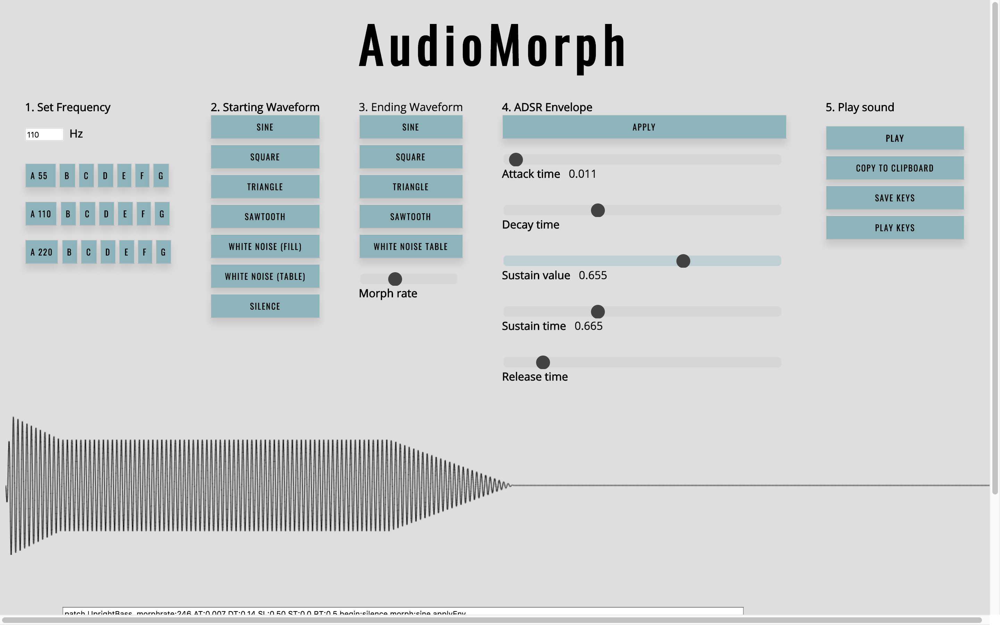

BEtsy was a four-person project at Ada where we were taked with creating an e-commerce site in Rails. Learning goals included implementing a user-based application logic, user authentication through OAuth, core comprehension of the MVC model, as well as agile practices. For our landing page, I wanted to highlight our occult theme with an eye-catching feature. I utilized an HTML Canvas element and Javascript to build a nod to a crystal ball, with smoke wafting inside.

Over the course of one “Labweek,” worked with a partner to build a basic digital synthesizer as a single-page
application. The app uses WebAudio and Canvas elements to demonstrate how to do sound synthesis in
Javascript. I was responsible for building the User Interface and visual representations of wavetables.
Ultimately, we succeeding in creating a session-based synthesizer, where users can control frequency
(arbitrarily or using musical notes to guide), the type(s) of waveform(s) to serve as the basis of
the sound, and the ASDR envelope for volume to create sounds; can see those sounds visually represented
as waveforms and how the waveforms change based on different controls, and save and playback those
waveforms on keypress.
One of the most exciting features for me to build was the representation of the waveform itself.
Using the collection of sound sample data that is used to play the sound, I created a path in a Canvas
element that uses the sample data as relative coordinates. A three second sound has more than 100,000
samples, so we found that it was visualizing the data on a high level (particularly helpful with
seeing the effects of the ASDR envelope), but you weren’t able to see the true quality of the waveform
on a millisecond level. To solve this problem, I built a ‘magnifying glass’ feature that takes the
x-position of the user’s mouse on a hover event, cross-references that with stored x-positions of
the initial waveform, and redraws a new Canvas element and path using only a range of 250 above and
below the value at that x-position.

Stemming from a project focused on binding interactivity with HTML elements, after building a basic keyboard with HTML, CSS, and Javascript, I decided to challenge myself to experiment with Canvas elements and create a less predictable experience. My goal was to create shapes using Javascript that would change each session, and had a more organic quality than CSS-built shapes. I attached sounds to HTML Canvas elements that are generated on load using random calculations of Bezier curves to offer a consistently unique experience. On click, the user can trigger the sound that is bound to that shape, and through a variety of clicks, could play a simple composition. As my ultimate goal was to create a 'keyboard' that was very different than the static experience usually associtated with music composition, my next challenge was to have these shapes move around the user's screen, but never extend the screen or fully exit the view.
Muncher is a recipe search website where a user can search with an ingredient, and a variety of recipes that utilize that ingredient will be returned. Clicking on any receipe in the search results will provide further details about that recipe, including nutrition facts, allergens, and a link to the full recipe on the web. The primary learning goals of this project were to configure an API for consumption, make authenticated API requests using HTTParty, consume the JSON responses, and map the responses using application-specific logic. Additionally, I implemnted pagination of the results and a responsive layout. When approaching this project from a layout and styling point of view, I knew that my application was simply a stop between the API that held all the information and the sites across the internet that held the full recipe (presumably a user's ultimate goal)- knowing that I would have to engage a user to use my application, rather than just an internet search, I wanted to implement a clear, clean, and consistent design that appeal to users.
Our static site was our first full project utilizing HTML and CSS. We were tasked with making ourselves a personal site that would feature information about us and our project work (pretty meta, huh?). Since I knew I would likely be changing and evolving my skills over the subsequent months and creating a different site as my ultimate portfolio, I decided to focus in on a garish theme. What I ultimately created came from challenging myself to achieve particular visual goals using only CSS and HTML. I was able to create a rotating cube entirely from CSS elements. I also creating 'glowing' text on hover to emphasize my '90's-video-game-retro concept.
The primary goal of Trek was to build a single-page web application that would query an API using AJAX to display information about all trips available for booking, see further details about specific trips, and allow users to claim their spots on those trips. After implemnting this core functionality, I recreated the project with similar functionality but using Backbone models, collections, and event workflow and Underscore templates. I used communicated both server-side and client-side validations to the user, and built a modal for booking spaces on a trip, so as to not disrupt the user's trip-browsing experience.